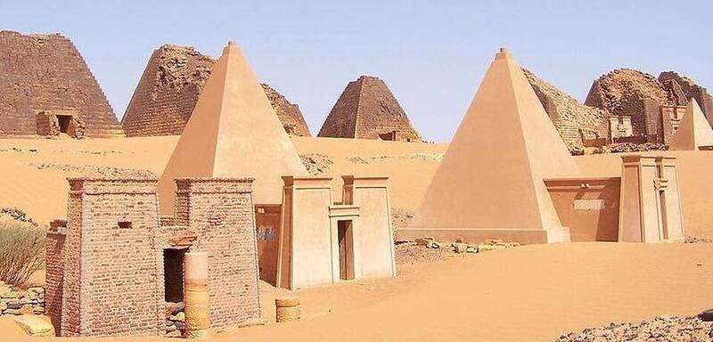

Pyramids of Meroë
Meroë, Sudan, about 300 BC to AD 350

Nearly 200 steep-sided pyramids built by the kings and queens of the Kingdom of Kush, more than all of Egypt's. 1
Open in the interactive Watcher
Sources
- Meroë Wikipedia
Meroë, Sudan, about 300 BC to AD 350

Nearly 200 steep-sided pyramids built by the kings and queens of the Kingdom of Kush, more than all of Egypt's. 1
Open in the interactive Watcher